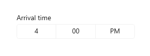
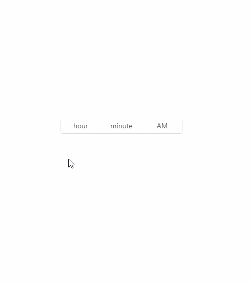
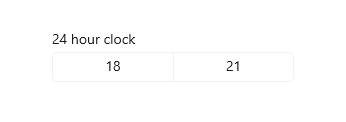
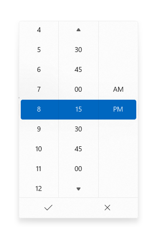
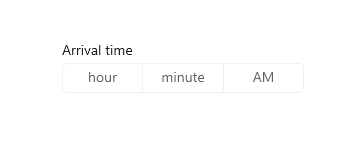
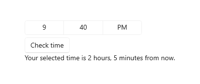

Time picker
The time picker gives you a standardized way to let users pick a time value using touch, mouse, or keyboard input.

Is this the right control?
Use a time picker to let a user pick a single time value.
For more info about choosing the right control, see the Date and time controls article.
Examples
The entry point displays the chosen time, and when the user selects the entry point, a picker surface expands vertically from the middle for the user to make a selection. The time picker overlays other UI; it doesn't push other UI out of the way.

Create a time picker
- Important APIs: TimePicker class, SelectedTime property
The WinUI 3 Gallery app includes interactive examples of most WinUI 3 controls, features, and functionality. Get the app from the Microsoft Store or get the source code on GitHub
This example shows how to create a simple time picker with a header.
<TimePicker x:Name="arrivalTimePicker" Header="Arrival time"/>
TimePicker arrivalTimePicker = new TimePicker();
arrivalTimePicker.Header = "Arrival time";
The resulting time picker looks like this:
Formatting the time picker
By default, the time picker shows a 12-hour clock with an AM/PM selector. You can set the ClockIdentifier property to "24HourClock" to show a 24-hour clock instead.
<TimePicker Header="24HourClock" SelectedTime="18:21" ClockIdentifier="24HourClock"/>

You can set the MinuteIncrement property to indicate the time increments shown in the minute picker. For example, 15 specifies that the TimePicker minute control displays only the choices 00, 15, 30, 45.
<TimePicker MinuteIncrement="15"/>

Time values
The time picker control has both Time/TimeChanged and SelectedTime/SelectedTimeChanged APIs. The difference between these is that Time is not nullable, while SelectedTime is nullable.
The value of SelectedTime is used to populate the time picker and is null by default. If SelectedTime is null, the Time property is set to a TimeSpan of 0; otherwise, the Time value is synchronized with the SelectedTime value. When SelectedTime is null, the picker is 'unset' and shows the field names instead of a time.

Initializing a time value
In code, you can initialize the time properties to a value of type TimeSpan:
TimePicker timePicker = new TimePicker
{
SelectedTime = new TimeSpan(14, 15, 00) // Seconds are ignored.
};
You can set the time value as an attribute in XAML. This is probably easiest if you're already declaring the TimePicker object in XAML and aren't using bindings for the time value. Use a string in the form Hh:Mm where Hh is hours and can be between 0 and 23 and Mm is minutes and can be between 0 and 59.
<TimePicker SelectedTime="14:15"/>
Note
For important info about date and time values, see DateTime and Calendar values in the Date and time controls article.
Using the time values
To use the time value in your app, you typically use a data binding to the SelectedTime or Time property, use the time properties directly in your code, or handle the SelectedTimeChanged or TimeChanged event.
For an example of using a
DatePickerandTimePickertogether to update a singleDateTimevalue, see Calendar, date, and time controls - Use a date picker and time picker together.
Here, the SelectedTime property is used to compare the selected time to the current time.
Notice that because the SelectedTime property is nullable, you have to explicitly cast it to DateTime, like this: DateTime myTime = (DateTime)(DateTime.Today + checkTimePicker.SelectedTime);. The Time property, however, could be used without a cast, like this: DateTime myTime = DateTime.Today + checkTimePicker.Time;.

<StackPanel>
<TimePicker x:Name="checkTimePicker"/>
<Button Content="Check time" Click="{x:Bind CheckTime}"/>
<TextBlock x:Name="resultText"/>
</StackPanel>
private void CheckTime()
{
// Using the Time property.
// DateTime myTime = DateTime.Today + checkTimePicker.Time;
// Using the SelectedTime property (nullable requires cast to DateTime).
DateTime myTime = (DateTime)(DateTime.Today + checkTimePicker.SelectedTime);
if (DateTime.Now >= myTime)
{
resultText.Text = "Your selected time has already past.";
}
else
{
string hrs = (myTime - DateTime.Now).Hours.ToString();
string mins = (myTime - DateTime.Now).Minutes.ToString();
resultText.Text = string.Format("Your selected time is {0} hours, {1} minutes from now.", hrs, mins);
}
}
UWP and WinUI 2
Important
The information and examples in this article are optimized for apps that use the Windows App SDK and WinUI 3, but are generally applicable to UWP apps that use WinUI 2. See the UWP API reference for platform specific information and examples.
This section contains information you need to use the control in a UWP or WinUI 2 app.
APIs for this control exist in the Windows.UI.Xaml.Controls namespace.
- UWP APIs: TimePicker class, SelectedTime property
- Open the WinUI 2 Gallery app and see the TimePicker in action. The WinUI 2 Gallery app includes interactive examples of most WinUI 2 controls, features, and functionality. Get the app from the Microsoft Store or get the source code on GitHub.
We recommend using the latest WinUI 2 to get the most current styles and templates for all controls. WinUI 2.2 or later includes a new template for this control that uses rounded corners. For more info, see Corner radius.